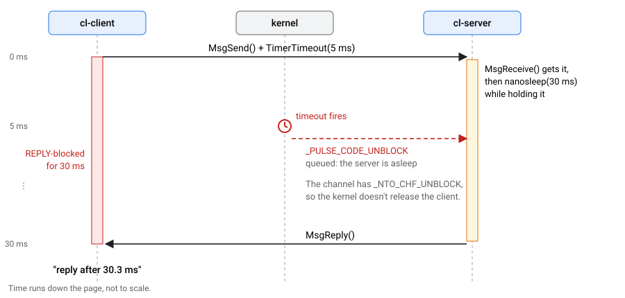
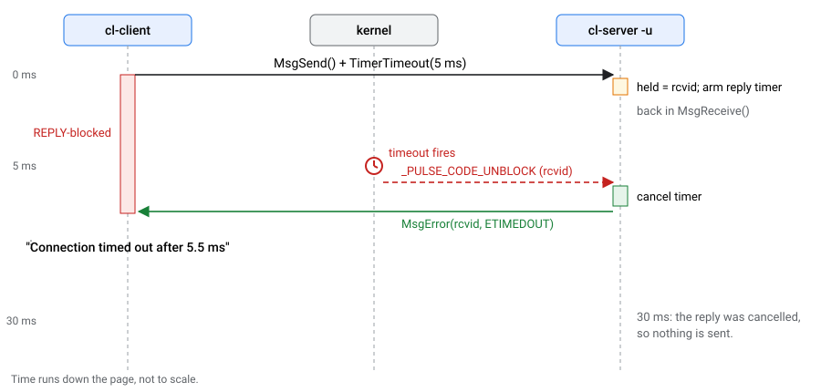
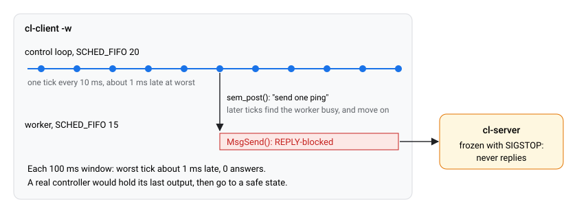

A client sends a request with a 5 ms timeout. The server takes 30 ms. How long does the client wait?
On QNX, the answer is often 30 ms. And if the server freezes, the client may wait forever, even through SIGKILL.
In this codelab you will build a tiny message-passing server and client and watch that happen on a real QNX 8.0 target. Then you will fix it twice: you write the server-side fix yourself, and you see how a control loop protects itself from a server that can't answer at all.
This behaviour was found by Faultline, a fault-injection tool for QNX 8.0: a 100 Hz pump controller that read its sensor with a 5 ms timeout ran 77 ms late when the sensor froze.
_NTO_CHF_UNBLOCK does, and why every name_attach() server has it.TimerTimeout() will release a client, and when it can't._PULSE_CODE_UNBLOCK.qcc working (source ~/qnx800/qnxsdp-env.sh). See Get a Free Non-Commercial QNX 8.0 License.mkqnximage --type=qemu. Every output in this codelab comes from QNX 8.0 x86_64 in QEMU with KVM; your timings will differ a little.codelab folder of the Faultline repository:git clone https://github.com/zuhairhalawa/faultline.git
cd faultline/codelabsource ~/qnx800/qnxsdp-env.sh
makeThis builds three programs into build/x86_64/. For a Raspberry Pi, run make PLATFORM=aarch64le and use build/aarch64le/ below.
ssh root@<target-ip> mkdir -p /data/cl
scp build/x86_64/cl-* root@<target-ip>:/data/cl/ssh root@<target-ip>
cd /data/clcl-client [-t TIMEOUT_MS] [-n COUNT] [-w] sends a ping every 100 ms. Each MsgSend() is bounded by TimerTimeout() (5 ms by default) for both the SEND and REPLY states. -w is the control loop from step 7.cl-server [-d DELAY_MS] [-u] registers the name cl-ping with name_attach() and answers pings. -d makes every answer late. -u turns on the fix.cl-server-todo is the same server with the fix left out. You complete it in step 6.Each step runs the server in the background (&) and the client in the same shell, so you can signal both. $! holds the pid of the last background process; the steps save it in SP (server) and CP (client). The sleep 1 after starting a server gives it time to start and register its name before the next command signals it or connects to it. Between steps, stop everything with:
slay -s SIGCONT cl-server cl-server-todo 2>/dev/null; slay -s SIGKILL cl-server cl-server-todo cl-client 2>/dev/null./cl-server & SP=$!; sleep 1
./cl-client -n 3server: pid 11907101, name cl-ping, delay 0 ms, naive (sleeps, then replies)
client: pid 11919390, timeout 5 ms
ping 1: reply after 0.0 ms
ping 2: reply after 0.0 ms
ping 3: reply after 0.1 msQNX message passing is synchronous. One ping goes through three states:
MsgSend(). Until the server receives the message, the client is SEND-blocked.MsgReceive() returns the message and an rcvid that identifies this client. Now the client is REPLY-blocked: it waits until the server answers that rcvid.MsgReply(rcvid, ...). The kernel copies the answer into the client's buffer, and the client runs again.TimerTimeout() asks the kernel to stop waiting after 5 ms, in either blocked state. Keep those two states in mind; the rest of the codelab is about the second one.
Now the server answers 30 ms late. The client still sets a 5 ms timeout on every MsgSend().
./cl-server -d 30 & SP=$!; sleep 1
./cl-client -n 3server: pid 11956253, name cl-ping, delay 30 ms, naive (sleeps, then replies)
client: pid 11968542, timeout 5 ms
server: got _PULSE_CODE_UNBLOCK (ignored; already replied)
ping 1: reply after 30.3 ms
server: got _PULSE_CODE_UNBLOCK (ignored; already replied)
ping 2: reply after 31.2 ms
server: got _PULSE_CODE_UNBLOCK (ignored; already replied)
ping 3: reply after 31.3 msThe answer is (b). The timeout fired at 5 ms, yet every call took 30 ms, and the server received one _PULSE_CODE_UNBLOCK per ping.

name_attach() creates its channel with _NTO_CHF_UNBLOCK (along with _NTO_CHF_DISCONNECT and _NTO_CHF_COID_DISCONNECT). See name_attach() and ChannelCreate()._PULSE_CODE_UNBLOCK pulse and leaves the client REPLY-blocked until the server replies or calls MsgError().The flag exists for a good reason: a server may have work in flight for that client, such as a DMA transfer or a reply buffer, and must clean it up before the client goes away. But it means the server decides when your timeout takes effect.
Freeze the server with SIGSTOP before the client even starts.
./cl-server & SP=$!; sleep 1
kill -STOP $SP
./cl-client -n 1 & CP=$!
sleep 1
pidin -p cl-client -F "%a %b %N %p %J %B" pid tid name prio STATE Blocked
12017694 1 cl-client 10r REPLY 12005405REPLY, on the server's pid. The server's thread was already waiting in MsgReceive() when it was stopped, and the kernel still handed it the message. So the client is past the point where its timeout could have saved it. (If you run pidin straight away, you may briefly catch the client REPLY-blocked on pid 1 while name_open() finishes; that's why the step waits a second.)
These are alternatives. After each one, clean up and repeat the commands above.
kill -TERM $CP: nothing happens. pidin still shows the client in REPLY.kill -KILL $CP: nothing happens either. On QNX 8.0 in our runs, pidin still showed the client REPLY-blocked after SIGKILL.kill -CONT $SP: the server runs, answers the pending request, and only then can the client finish or act on a signal you sent it.kill -KILL $SP: the client is freed with an error:ping 1: No such process after 1005.9 msThe request in flight fails with ESRCH. Any later MsgSend() on the same connection fails at once with EBADF, because the connection is gone.
A server that can be slow must never sleep while it holds a request. Instead:
rcvid and go straight back to MsgReceive(). Nothing forces a server to reply before it receives the next message._PULSE_CODE_UNBLOCK arrives for the held rcvid first, cancel the timer and release the client with MsgError().
Open server-todo.c on your host. It's the whole server, with two gaps marked TODO 1 and TODO 2. Everything else is in place: the timer reply_timer is created at startup with SIGEV_PULSE_INIT aimed at the server's own channel, so its PULSE_REPLY_DUE pulse arrives through the same MsgReceive() as everything else, and that case already sends the held reply.
reply_timer fire once, delay_ms from now._PULSE_CODE_UNBLOCK case: the client you're holding wants to leave. Release it with an error it will recognise as a timeout, and make sure your scheduled reply never goes out.Do TODO 2 first. After each TODO, rebuild with make, copy cl-server-todo to the target, and run:
./cl-server-todo -d 30 -u & SP=$!; sleep 1
./cl-client -n 3Neither TODO done. Still the naive server:
ping 1: reply after 32.6 msOnly TODO 2 done. The server now holds the request and sees the unblock pulse for it (that printf is already in the TODO 1 branch), but nothing releases the client yet, so it still waits for the timer's reply:
server: client gave up waiting (TODO 1 decides what happens next)
ping 1: reply after 31.8 msBoth done. The client's timeout works (the server's line is whatever you print in TODO 1):
ping 1: Connection timed out after 5.4 ms
ping 2: Connection timed out after 6.1 msIt fires a little after 5 ms because timers expire on the system clock tick, 1 ms by default. Finally, check that a reply that is late but still inside the timeout is delivered normally:
./cl-server-todo -d 3 -u & SP=$!; sleep 1
./cl-client -n 3ping 1: reply after 3.7 ms
ping 2: reply after 4.1 ms
ping 3: reply after 4.3 msTry without them first. Each one gives away a little more.
held and held_reply, and the PULSE_REPLY_DUE case reads them. A one-shot timer is a struct itimerspec with only it_value set.held = rcvid; held_reply = r;, then struct itimerspec its = { 0 }; with its.it_value.tv_sec = delay_ms / 1000; and its.it_value.tv_nsec = (delay_ms % 1000) * 1000000L;, then timer_settime(reply_timer, 0, &its, NULL);. TODO 1 is timer_settime(reply_timer, 0, &off, NULL); MsgError(held, ETIMEDOUT); held = 0;.server.c. It's cl-server -u.The fixed server only helps while it can run. Freeze it and the client is stuck exactly as in step 5: nobody is left to answer the unblock pulse.
So a client with a deadline shouldn't call MsgSend() from its time-critical thread, at least not to a server it can't trust to answer. In cl-client -w, a 100 Hz loop at SCHED_FIFO priority 20 hands each request to a worker thread at priority 15 and never waits for it. It uses whatever answers have arrived, and keeps time either way:
clock_nanosleep(CLOCK_MONOTONIC, TIMER_ABSTIME, &next, NULL);
/* ... measure how late this tick is ... */
int idle = 0; /* never wait for the server here */
if (atomic_compare_exchange_strong(&busy, &idle, 1)) sem_post(&go);
First, with a healthy server:
./cl-server > /dev/null & SP=$!; sleep 1
./cl-client -w -n 3loop: 100 ms window 1, worst tick 1.03 ms late, 9 answers
loop: 100 ms window 2, worst tick 0.94 ms late, 10 answers
loop: 100 ms window 3, worst tick 0.93 ms late, 10 answersAbout 1 ms of lateness is the clock tick again: an absolute sleep wakes on the next tick.
./cl-server > /dev/null & SP=$!; sleep 1
./cl-client -w -n 5 & CP=$!
sleep 0.15; kill -STOP $SPloop: 100 ms window 1, worst tick 1.13 ms late, 9 answers
loop: 100 ms window 2, worst tick 0.98 ms late, 6 answers
loop: 100 ms window 3, worst tick 1.01 ms late, 0 answers
loop: 100 ms window 4, worst tick 1.05 ms late, 0 answers
loop: 100 ms window 5, worst tick 1.10 ms late, 0 answersThe answers stop, but the loop stays on time. In a real controller, "0 answers" is what your fault handling reacts to: hold the last value, then go to a safe state.
When the loop finishes, look at the client again:
pidin -p cl-client -F "%a %b %N %p %J %B" pid tid name prio STATE Blocked
12304414 2 cl-client 15f REPLY 12292125Look at the server too, with pidin -p cl-server -F "%a %b %N %p %J %B":
pid tid name prio STATE Blocked
17481757 1 cl-server 15r STOPPEDIt started at the default priority 10, but it shows 15: when its thread received the worker's message, QNX gave it the sender's priority. That's priority inheritance through message passing, and here the server is stuck at the borrowed priority.
The worker thread (tid 2, priority 15 FIFO) is still REPLY-blocked on the frozen server, and as in step 5, even SIGKILL doesn't free it. What does free it is dealing with the server: resume it, or kill it. That's the job of a supervisor that watches heartbeats and kills a server that stops sending them. Faultline does exactly that with its fl-supervisor.
sival_int.** rcvid_t is 64-bit on QNX 8.0, so compare with (rcvid_t)msg.pulse.value.sival_long.struct itimerspec by position.** POSIX doesn't fix the order of its members. The first version of this codelab's server wrote { { 0, 0 }, { sec, nsec } }, meaning interval then value; on QNX 8.0 that left it_value at zero, which disarms the timer, so no held reply was ever sent. Set its.it_value.tv_sec and .tv_nsec by name.MsgSend() out of the time-critical thread._NTO_CHF_UNBLOCK server survived SIGKILL in our runs. Deal with the server.Answer these without scrolling back. The answers are below.
MsgSend() has a 5 ms TimerTimeout() for SEND and REPLY. The single-threaded name_attach() server receives the message at once, then sleeps 20 ms before replying. How long does the client wait?_PULSE_CODE_UNBLOCK with MsgError(rcvid, ETIMEDOUT). How long now, and what does MsgSend() return?MsgSend() happen?_PULSE_CODE_UNBLOCK, and this server's only thread is asleep until it has replied.MsgSend() returns -1 with errno set to ETIMEDOUT._NTO_CHF_UNBLOCK, which every name_attach() channel gets. That flag tells the kernel to hand the decision to the server, which may need to clean up work in flight for that client first.ESRCH). Resuming the server releases it as soon as the server replies or answers the unblock pulse. Killing the client, even with SIGKILL, didn't in our runs.name_attach() channel has _NTO_CHF_UNBLOCK. Once the server has your message, **your TimerTimeout() only works if the server answers the unblock pulse.**_PULSE_CODE_UNBLOCK with MsgError().MsgSend() from a lower-priority worker thread, and decide from fresh data, not from whether the call returned.ESRCH, and the client can reconnect to a restarted server.slay -s SIGCONT cl-server cl-server-todo 2>/dev/null; slay -s SIGKILL cl-server cl-server-todo cl-client 2>/dev/null
rm -rf /data/clChannelCreate(): the channel flags, including _NTO_CHF_UNBLOCK.TimerTimeout(): kernel timeouts for blocking states.MsgError(): releasing a client with an error.